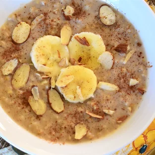

Creamy Slow Cooker Steel-Cut Oats
Back

Description
Wake up to a delicious and filling breakfast of creamy steel-cut oats, cooked in the slow cooker with cinnamon,
brown sugar, and raisins.
Ingredients
- 4 cups water
- 2 cups steel cut oats
- 2 cups almond milk
- 2 cups half-and-half
- 1/2 cup brown sugar
- 1/2 cup raisins
- 1 cinnamon stick
Steps
-
Combine water, steel cut oats, almond milk, half-and-half, brown sugar, raisins, and cinnamon stick in a
slow cooker; mix to combine. Cook on Low until oats are soft, about 8 hours.